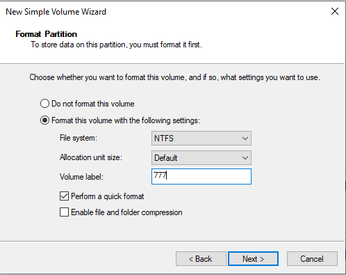
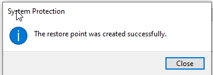

Windows 10 Pro
Windows 10 Pro és una edició de Windows 10 dissenyada per a usuaris professionals i empresarials que requereixen funcions avançades de seguretat, gestió i productivitat. Aquesta versió inclou característiques addicionals que no es troben en les edicions Home.
Característiques clau
- Gestió i seguretat: Incorpora polítiques de grup i accés a l'Active Directory, a més de funcions com BitLocker per xifrar el disc dur.
- Virtualització: Permet utilitzar Hyper-V per gestionar i executar màquines virtuals.
- Connexió a xarxes empresarials: Ofereix opcions avançades per connectar-se a xarxes corporatives mitjançant VPN i altres serveis.
- Actualitzacions de seguretat: Proporciona un millor control sobre les actualitzacions i les opcions de seguretat avançades per protegir l'entorn informàtic.
Usos habituals
- Entorns empresarials: Ideal per a administradors de sistemes i professionals que necessiten integració amb xarxes i directoris actius.
- Treball amb aplicacions professionals: Suporta eines de productivitat i programari especialitzat usat en oficines i empreses.
- Entorns de desenvolupament i virtualització: Permet crear i gestionar entorns virtuals per a proves i desenvolupament de solucions.
- Gestió de dispositius: Facilita el control i la configuració centralitzada de diversos dispositius en una xarxa corporativa.
Instal·lació Windows 10 Pro
Obrim virtualbox, posem la nostra ISO de windows 10 pro, i marquem la casella de Skip unnatended installation.
Ara, aumentem els recursos jo he establert 6 GB de RAM i 4 nuclis
Ara, ja podem engagar la màquina virtual i començar la instal·lació de windows 10 pro, i per començar ens demanarà que establim un idioma per al sistema.
Aquí se'ns demana quina instal·lació volem fer de Windows.
Ens pregunta com volem fer l'instal·lació, seleccionarem "Custom" i llavors ja podrem triar el disc on volem fer l'isnatl·lació, si només teniu un, doncs seleccioneu el que teniu.
I ara, comença l'instal·lació del windows
Després d'una estona ens mostrarà ja el windows, haurem d'assignar un usuari i una contrasenya al nostre dispositiu, i també activar o desactivar funcionalitats que té windows per defecte. Després de fer això,ja tindrem el nostre dispositiu llest per al funcionament.
Particions en Windows
Per crear particions dintre del nostre disc mitjançant el nostre sistema operatiu Windows, el que hem de fer és obrir l'apartat de "Crear y formatear particiones del disco duro"
Ara, se'ns obrira un menú amb totes les particions que tenim, i fem clic dret a sobre del nostre disc, en el meu cas és el disc C:. Un cop hem fet clic dret, seleccionem l'opció de Reducir Volumen.
Ara seleccionem la mida de la reducció que volem fer dintre del nostre disc.
I com podem observar, la reducció s'ha creat correctament.
Ara creem una partició dintre d'aquesta reducció de disc que hem creat anteriorment.
Ens demana quina mida volem donar-li a la partició, això pot servir si volem crear més d'una partició, però no és el nostre cas.
Ens demanarà quin tipus de format volem que sigui la partició, en aquest cas voldrem que sigue NTFS

I com podem observar, ja està instal·lada la partició.
Punts de restauració
Els punts de restauració en Windows són còpies de seguretat de l'estat del sistema en un moment determinat. Permeten recuperar el sistema en cas que hi hagi problemes ocasionats per instal·lacions, actualitzacions o altres canvis que afectin el rendiment.
• Windows crea automàticament punts de restauració en esdeveniments crítics o abans de canvis importants al sistema. També és possible crear-ne de manera manual.
• Per utilitzar-los, accediu a la secció "Recuperació" del Panel de Control i seleccioneu el punt de restauració desitjat per revertir el sistema a un estat anterior sense perdre fitxers personals.
Aquesta funcionalitat és una eina valuosa per solucionar incidències menors i mantenir l'estabilitat del sistema.
Per crear-ne una el primer que hem de fer és buscar l'opció de "Crear un punto de restauración"
Si volem crear un punt de restauració, hem de seleccionar el disc amb el que volem fer el punt de restauració, i després premem el botó de configuració. Un cop Fem això, se'ns desplegara una altra finestra on podrem configurar el disc, i habilitem la protecció del sistema.
Ara, ja podem crear el punt de restauració. Li donem un nom i la creem.
Aquí tenim la confirmació de que el punt s'ha creat correctament.

Si volem aplicar aquesta restauració, obrim el menú recovery i seleccionem la opció de "System restore"

Seleccionem quin punt de restauració volem recuperar, en el nostre cas, com només tenim un punt de restauració, doncs només cal que seleccionem la que haviem creat anteriorment, jo l'havia anomenada "ioquese".
No obstant, com que no té massa sentit fer una restauració d'un sistema que no te res nou, instal·laré un parell de programes per a que es pugui observar que funcina. L'únic que s'ha de fer per a instal·lar un programa en windows, és senzill, només hem de fer clic al executable que descarreguem (Vigileu d'on descarregueu aquests executables, perquè poden arribar a ser maliciosos)
I començem la instal·lació del programa, normalment sol ser molt senzilla e interactiva així que els usuaris poden instal·lar qualsevol programa normalment.
I aqui podem veure que realment s'han instal·lat els programes correctament, perquè tenen un directori creat al escriptori
Ara si, ja podem restaurar el nostre sistema per comprovar que funicona correctament.
Ens ensenya els programes que estaran afectats dintre del nostre sistema després de la restauració
Haurem d'esperar una estona, i podrem observar com s'ha realitzat correctament la restauració del sistema, perquè al iniciar ens saltarà una finestra que diu que la restauració s'ha realitzat correctament.
I en buscar l'aplicació, evidentment, no ens apareix.